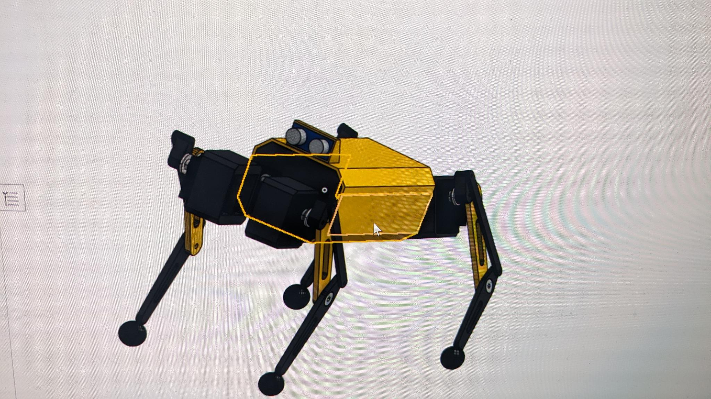

Designing the Dog

After having the idea ready, and doing research on existing robot dogs, I gave my first attempt at replicating one. I designed a leg module and a main body, and put them together in an assembly to get a rough idea for sizes and materials I would need.